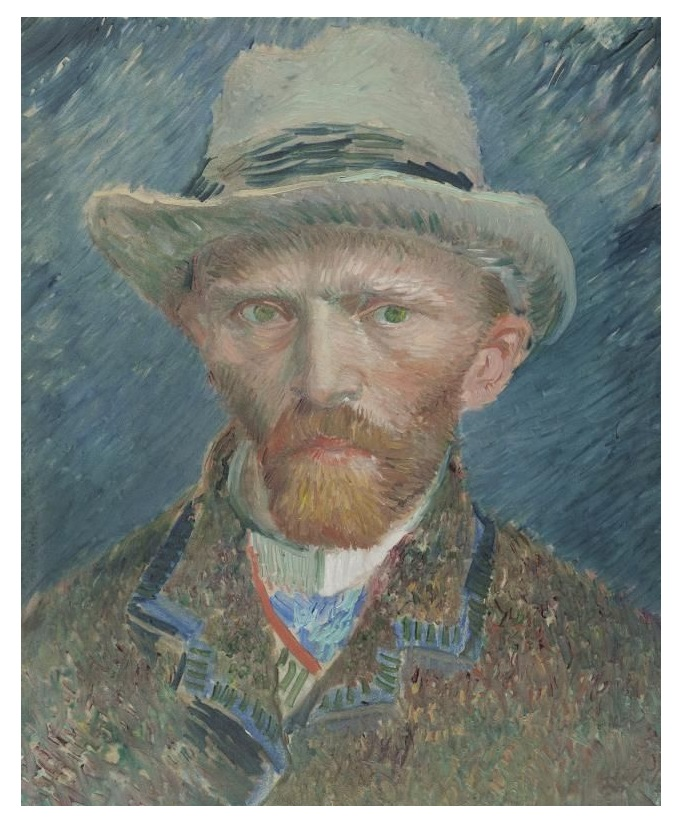

Na infância, Van Gogh aprendeu inglês, francês e alemão. Mas, com apenas 15 anos, deixou os estudos para trabalhar na loja de um tio, em Haia (Holanda). Com 24 anos, achou que a sua vocação era trabalhar com a evangelização, chegando a estudar teologia, em Amsterdã. Pouco tempo depois, dividiu os seus poucos bens com os pobres e passou a ser sustentado pelo irmão, ao mesmo tempo em que iniciava a carreira profissional como pintor.
Van Gogh, que também morou na França e na Bélgica (onde conviveu com mineiros extremamente pobres), pintou mais de 400 telas os três anos anteriores à sua morte foram os mais produtivos. Uma mudança fundamental na vida do pintor holandês aconteceu quando Van Gogh trocou Paris por Arles, mais ao sul da França. Na pequena cidade, Van Gogh aluga uma casa e intensifica o seu trabalho, ao lado de Gauguin.
Após um período de ótima convivência, os dois pintores começam a discutir muito e Van Gogh ataca Gauguin com uma navalha em dezembro de 1888. Inconformado com o fracasso do ataque e completamente transtornado, Van Gogh corta o lóbulo de sua orelha esquerda com a própria arma. Em seguida, embrulha o lóbulo e o entrega a uma prostituta. Internado em um hospital, recebe a visita do irmão Theodorus. No começo de janeiro de 1889, Van Gogh deixa o hospital, mas apresenta sinais evidentes de disfunção mental _às vezes, aparenta tranquilidade, em outras oportunidades, demonstra alucinações.
Internado pelo irmão em um asilo, Van Gogh não deixa de pintar. Por ironia, à medida que a sua saúde fica ainda mais deteriorara, a classe artística começa a reconhecer o seu talento, expondo alguns de seus trabalhos em museus. Quando deixou o asilo, o pintor holandês foi morar nas imediações da casa de seu irmão. Nesta época, pinta, em média, um quadro por dia. Depois de ver os seus problemas mentais serem agravados, Theodorus decide que Van Gogh será tratado pelo médico Paul Gachet. Em maio de 1890, aparentando estar recuperado, Van Gogh passa a morar em Auvers-sur-Oise, a noroeste de Paris, onde pinta freneticamente.
Em julho, uma nova recaída no estado de saúde do pintor holandês, que também demonstra inconformismo com as dificuldades financeiras enfrentadas pelo seu irmão. No dia 27, Van Gogh sai para fazer um passeio e toma uma decisão drástica _atira contra si mesmo, no tórax. Cambaleando, volta para a sua casa, mas não comenta com ninguém que tinha tentado o suicídio. Encontrado por amigos, Van Gogh passa as últimas 48 horas de sua vida, conversando com o seu irmão _os médicos não conseguiram retirar a bala do tórax. No dia 29, pela manhã, o pintor morreu e o seu caixão foi coberto com girassóis, flor que ele amava. Aliás, a tela "Os Girassóis" é uma das obras-primas de Van Gogh.
Fonte: UOL Educação.